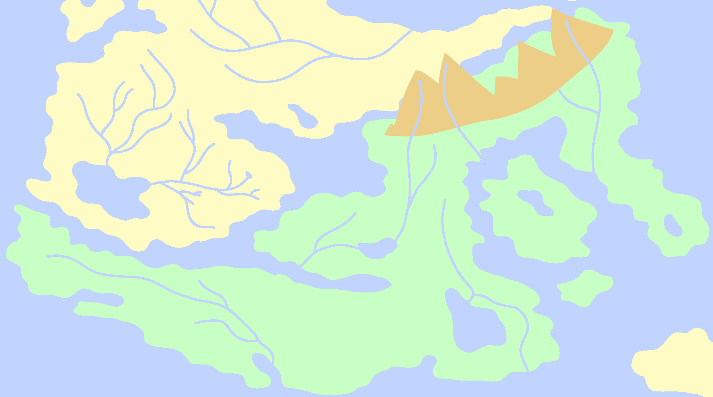
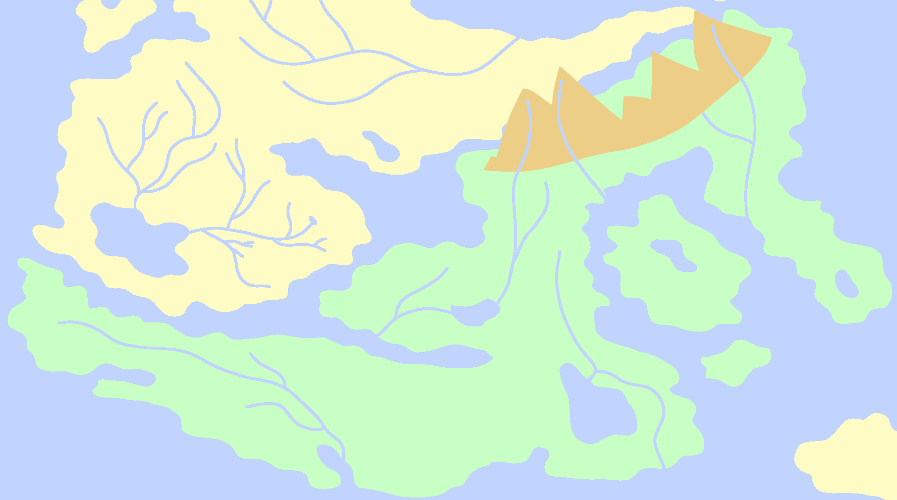

Petiola
There are three major islands that make up Petiola. The largest is simply named Petiola, and is the namesake of the region. The next largest is a donut shaped island named Yubiñu, and the smallest of the three is named Throlik. Petiola and Yuniñu are inhabited, but Throlik is not.
Petiola exists in the most climactic zones out of any other region in Karvaea, with the most northern parts of the region having a tropical climate, and the most southern parts of the region having a polar climate. This range in climate is among the reasons Petiola has become so popular over time.
Close